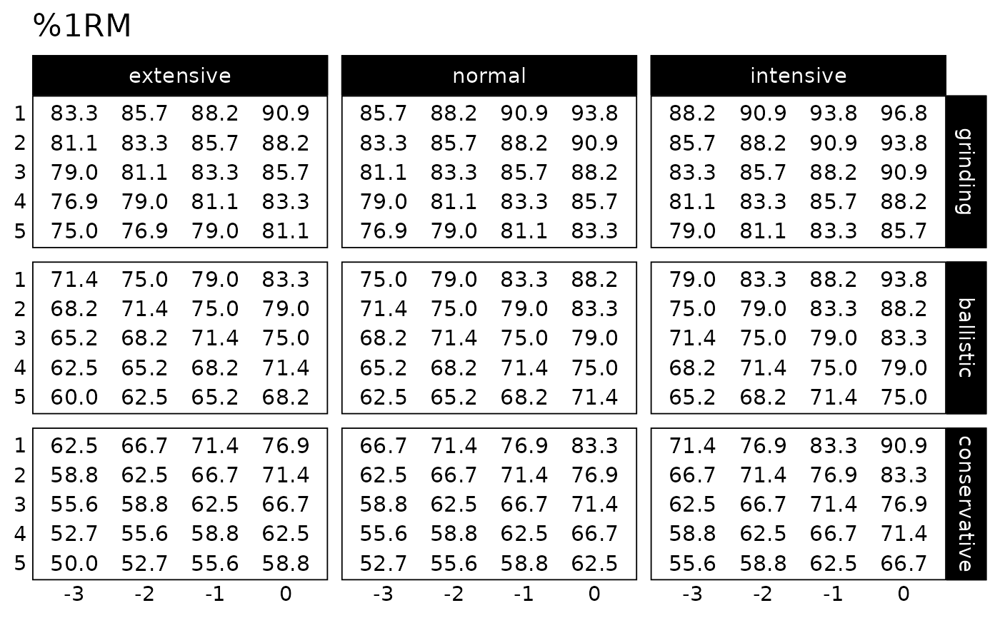
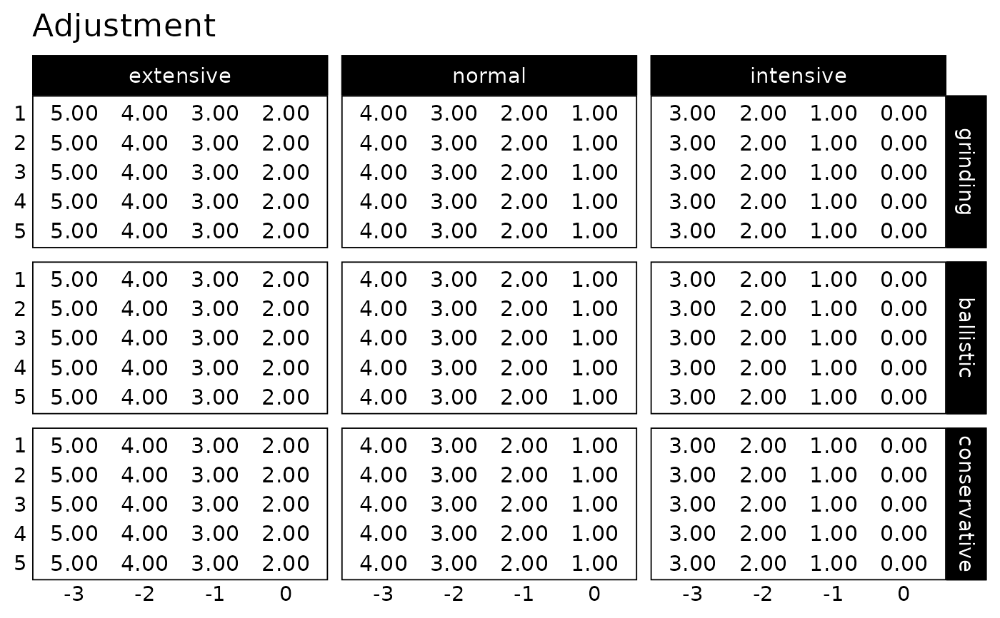

Family of functions to create progression tables
Source:R/generate-progression-table.R, R/progression-table-DI.R, R/progression-table-RIR.R, and 6 more
progression_table.RdFamily of functions to create progression tables
Usage
generate_progression_table(
progression_table,
type = c("grinding", "ballistic", "conservative"),
volume = c("intensive", "normal", "extensive"),
reps = 1:5,
step = seq(-3, 0, 1),
...
)
progression_DI(
reps,
step = 0,
volume = "normal",
adjustment = 0,
type = "grinding",
mfactor = NULL,
step_increment = -0.025,
volume_increment = step_increment,
...
)
progression_RIR(
reps,
step = 0,
volume = "normal",
adjustment = 0,
type = "grinding",
mfactor = NULL,
step_increment = 1,
volume_increment = step_increment,
...
)
progression_RIR_increment(
reps,
step = 0,
volume = "normal",
adjustment = 0,
type = "grinding",
mfactor = NULL,
...
)
progression_perc_MR(
reps,
step = 0,
volume = "normal",
adjustment = 0,
type = "grinding",
mfactor = NULL,
step_increment = -0.1,
volume_increment = -0.2,
...
)
progression_perc_MR_variable(
reps,
step = 0,
volume = "normal",
adjustment = 0,
type = "grinding",
mfactor = NULL,
...
)
progression_perc_drop(
reps,
step = 0,
volume = "normal",
adjustment = 0,
type = "grinding",
mfactor = NULL,
...
)
progression_rel_int(
reps,
step = 0,
volume = "normal",
adjustment = 0,
type = "grinding",
mfactor = NULL,
step_increment = -0.05,
volume_increment = -0.075,
...
)
progression_variable_DI(
reps,
step = 0,
volume = "normal",
adjustment = 0,
type = "grinding",
mfactor = NULL,
rep_1_step_increment = -0.02,
rep_12_step_increment = -0.04,
rep_1_volume_increment = -0.02,
rep_12_volume_increment = -0.04,
...
)
progression_variable_RIR(
reps,
step = 0,
volume = "normal",
adjustment = 0,
type = "grinding",
mfactor = NULL,
rep_1_step_increment = 1,
rep_12_step_increment = 2,
rep_1_volume_increment = 1,
rep_12_volume_increment = 2,
...
)Arguments
- progression_table
Progression table function to use
- type
Character vector. Type of max rep table. Options are grinding (Default), ballistic, and conservative.
- volume
Character vector: 'intensive', 'normal' (Default), or 'extensive'
- reps
Numeric vector. Number of repetition to be performed
- step
Numeric vector. Progression step. Default is 0. Use negative numbers (i.e., -1, -2)
- ...
Extra arguments forwarded to
adj_perc_1RMfamily of functions Use this to supply different parameter value (i.e.,k = 0.035), or model function (i.e.,max_perc_1RM_func = max_perc_1RM_linear)- adjustment
Numeric vector. Additional post adjustment applied to sets. Default is none (value depends on the method).
- mfactor
Numeric vector. Factor to adjust max rep table. Used instead of
typeparameter, unlessNULL- step_increment, volume_increment
Numeric vector. Used to adjust specific progression methods
- rep_1_step_increment
Numeric vector. Default 1
- rep_12_step_increment
Numeric vector. Default 2
- rep_1_volume_increment
Numeric vector. Default 1
- rep_12_volume_increment
Numeric vector. Default 2
Functions
generate_progression_table(): Generates progression tablesprogression_DI(): Deducted Intensity progression table. This simplest progression table simply deducts intensity to progress. Adjust this deducted by using thedeductionparameter (default is equal to -0.025)progression_RIR(): Constant RIR Increment progression table. This variant have constant RIR increment across reps from phases to phases and RIR difference between extensive, normal, and intensive schemes. Usestep_incrementandvolume_incrementparameters to utilize needed incrementsprogression_RIR_increment(): RIR Increment progression table (see Strength Training Manual)progression_perc_MR(): Constant %MR Step progression table. This variant have constant %MR increment across reps from phases to phases and %MR difference between extensive, normal, and intensive schemes. Usestep_incrementandvolume_incrementparameters to utilize needed incrementsprogression_perc_MR_variable(): Variable %MR Step progression tableprogression_perc_drop(): Perc Drop progression table (see Strength Training Manual)progression_rel_int(): Relative Intensity progression table. Usestep_incrementandvolume_incrementparameters to utilize needed incrementsprogression_variable_DI(): Variable Deducted Intensity progression table. This function allows you to generate variable Deducted Intensity table, with adjustments linearly increasing for both step progressions as well volume increment based on the reps done.progression_variable_RIR(): Variable RIR progression table. This function allows you to generate variable RIR progression table, with adjustments linearly increasing for both step progressions as well volume increment based on the reps done.
Examples
generate_progression_table(progression_RIR)
#> type volume reps step adjustment perc_1RM
#> 1 grinding intensive 1 -3 3 0.8824568
#> 2 ballistic intensive 1 -3 3 0.7896399
#> 3 conservative intensive 1 -3 3 0.7144899
#> 4 grinding normal 1 -3 4 0.8572653
#> 5 ballistic normal 1 -3 4 0.7501875
#> 6 conservative normal 1 -3 4 0.6668890
#> 7 grinding extensive 1 -3 5 0.8334722
#> 8 ballistic extensive 1 -3 5 0.7144899
#> 9 conservative extensive 1 -3 5 0.6252345
#> 10 grinding intensive 2 -3 3 0.8572653
#> 11 ballistic intensive 2 -3 3 0.7501875
#> 12 conservative intensive 2 -3 3 0.6668890
#> 13 grinding normal 2 -3 4 0.8334722
#> 14 ballistic normal 2 -3 4 0.7144899
#> 15 conservative normal 2 -3 4 0.6252345
#> 16 grinding extensive 2 -3 5 0.8109642
#> 17 ballistic extensive 2 -3 5 0.6820352
#> 18 conservative extensive 2 -3 5 0.5884776
#> 19 grinding intensive 3 -3 3 0.8334722
#> 20 ballistic intensive 3 -3 3 0.7144899
#> 21 conservative intensive 3 -3 3 0.6252345
#> 22 grinding normal 3 -3 4 0.8109642
#> 23 ballistic normal 3 -3 4 0.6820352
#> 24 conservative normal 3 -3 4 0.5884776
#> 25 grinding extensive 3 -3 5 0.7896399
#> 26 ballistic extensive 3 -3 5 0.6524008
#> 27 conservative extensive 3 -3 5 0.5558026
#> 28 grinding intensive 4 -3 3 0.8109642
#> 29 ballistic intensive 4 -3 3 0.6820352
#> 30 conservative intensive 4 -3 3 0.5884776
#> 31 grinding normal 4 -3 4 0.7896399
#> 32 ballistic normal 4 -3 4 0.6524008
#> 33 conservative normal 4 -3 4 0.5558026
#> 34 grinding extensive 4 -3 5 0.7694083
#> 35 ballistic extensive 4 -3 5 0.6252345
#> 36 conservative extensive 4 -3 5 0.5265652
#> 37 grinding intensive 5 -3 3 0.7896399
#> 38 ballistic intensive 5 -3 3 0.6524008
#> 39 conservative intensive 5 -3 3 0.5558026
#> 40 grinding normal 5 -3 4 0.7694083
#> 41 ballistic normal 5 -3 4 0.6252345
#> 42 conservative normal 5 -3 4 0.5265652
#> 43 grinding extensive 5 -3 5 0.7501875
#> 44 ballistic extensive 5 -3 5 0.6002401
#> 45 conservative extensive 5 -3 5 0.5002501
#> 46 grinding intensive 1 -2 2 0.9091736
#> 47 ballistic intensive 1 -2 2 0.8334722
#> 48 conservative intensive 1 -2 2 0.7694083
#> 49 grinding normal 1 -2 3 0.8824568
#> 50 ballistic normal 1 -2 3 0.7896399
#> 51 conservative normal 1 -2 3 0.7144899
#> 52 grinding extensive 1 -2 4 0.8572653
#> 53 ballistic extensive 1 -2 4 0.7501875
#> 54 conservative extensive 1 -2 4 0.6668890
#> 55 grinding intensive 2 -2 2 0.8824568
#> 56 ballistic intensive 2 -2 2 0.7896399
#> 57 conservative intensive 2 -2 2 0.7144899
#> 58 grinding normal 2 -2 3 0.8572653
#> 59 ballistic normal 2 -2 3 0.7501875
#> 60 conservative normal 2 -2 3 0.6668890
#> 61 grinding extensive 2 -2 4 0.8334722
#> 62 ballistic extensive 2 -2 4 0.7144899
#> 63 conservative extensive 2 -2 4 0.6252345
#> 64 grinding intensive 3 -2 2 0.8572653
#> 65 ballistic intensive 3 -2 2 0.7501875
#> 66 conservative intensive 3 -2 2 0.6668890
#> 67 grinding normal 3 -2 3 0.8334722
#> 68 ballistic normal 3 -2 3 0.7144899
#> 69 conservative normal 3 -2 3 0.6252345
#> 70 grinding extensive 3 -2 4 0.8109642
#> 71 ballistic extensive 3 -2 4 0.6820352
#> 72 conservative extensive 3 -2 4 0.5884776
#> 73 grinding intensive 4 -2 2 0.8334722
#> 74 ballistic intensive 4 -2 2 0.7144899
#> 75 conservative intensive 4 -2 2 0.6252345
#> 76 grinding normal 4 -2 3 0.8109642
#> 77 ballistic normal 4 -2 3 0.6820352
#> 78 conservative normal 4 -2 3 0.5884776
#> 79 grinding extensive 4 -2 4 0.7896399
#> 80 ballistic extensive 4 -2 4 0.6524008
#> 81 conservative extensive 4 -2 4 0.5558026
#> 82 grinding intensive 5 -2 2 0.8109642
#> 83 ballistic intensive 5 -2 2 0.6820352
#> 84 conservative intensive 5 -2 2 0.5884776
#> 85 grinding normal 5 -2 3 0.7896399
#> 86 ballistic normal 5 -2 3 0.6524008
#> 87 conservative normal 5 -2 3 0.5558026
#> 88 grinding extensive 5 -2 4 0.7694083
#> 89 ballistic extensive 5 -2 4 0.6252345
#> 90 conservative extensive 5 -2 4 0.5265652
#> 91 grinding intensive 1 -1 1 0.9375586
#> 92 ballistic intensive 1 -1 1 0.8824568
#> 93 conservative intensive 1 -1 1 0.8334722
#> 94 grinding normal 1 -1 2 0.9091736
#> 95 ballistic normal 1 -1 2 0.8334722
#> 96 conservative normal 1 -1 2 0.7694083
#> 97 grinding extensive 1 -1 3 0.8824568
#> 98 ballistic extensive 1 -1 3 0.7896399
#> 99 conservative extensive 1 -1 3 0.7144899
#> 100 grinding intensive 2 -1 1 0.9091736
#> 101 ballistic intensive 2 -1 1 0.8334722
#> 102 conservative intensive 2 -1 1 0.7694083
#> 103 grinding normal 2 -1 2 0.8824568
#> 104 ballistic normal 2 -1 2 0.7896399
#> 105 conservative normal 2 -1 2 0.7144899
#> 106 grinding extensive 2 -1 3 0.8572653
#> 107 ballistic extensive 2 -1 3 0.7501875
#> 108 conservative extensive 2 -1 3 0.6668890
#> 109 grinding intensive 3 -1 1 0.8824568
#> 110 ballistic intensive 3 -1 1 0.7896399
#> 111 conservative intensive 3 -1 1 0.7144899
#> 112 grinding normal 3 -1 2 0.8572653
#> 113 ballistic normal 3 -1 2 0.7501875
#> 114 conservative normal 3 -1 2 0.6668890
#> 115 grinding extensive 3 -1 3 0.8334722
#> 116 ballistic extensive 3 -1 3 0.7144899
#> 117 conservative extensive 3 -1 3 0.6252345
#> 118 grinding intensive 4 -1 1 0.8572653
#> 119 ballistic intensive 4 -1 1 0.7501875
#> 120 conservative intensive 4 -1 1 0.6668890
#> 121 grinding normal 4 -1 2 0.8334722
#> 122 ballistic normal 4 -1 2 0.7144899
#> 123 conservative normal 4 -1 2 0.6252345
#> 124 grinding extensive 4 -1 3 0.8109642
#> 125 ballistic extensive 4 -1 3 0.6820352
#> 126 conservative extensive 4 -1 3 0.5884776
#> 127 grinding intensive 5 -1 1 0.8334722
#> 128 ballistic intensive 5 -1 1 0.7144899
#> 129 conservative intensive 5 -1 1 0.6252345
#> 130 grinding normal 5 -1 2 0.8109642
#> 131 ballistic normal 5 -1 2 0.6820352
#> 132 conservative normal 5 -1 2 0.5884776
#> 133 grinding extensive 5 -1 3 0.7896399
#> 134 ballistic extensive 5 -1 3 0.6524008
#> 135 conservative extensive 5 -1 3 0.5558026
#> 136 grinding intensive 1 0 0 0.9677732
#> 137 ballistic intensive 1 0 0 0.9375586
#> 138 conservative intensive 1 0 0 0.9091736
#> 139 grinding normal 1 0 1 0.9375586
#> 140 ballistic normal 1 0 1 0.8824568
#> 141 conservative normal 1 0 1 0.8334722
#> 142 grinding extensive 1 0 2 0.9091736
#> 143 ballistic extensive 1 0 2 0.8334722
#> 144 conservative extensive 1 0 2 0.7694083
#> 145 grinding intensive 2 0 0 0.9375586
#> 146 ballistic intensive 2 0 0 0.8824568
#> 147 conservative intensive 2 0 0 0.8334722
#> 148 grinding normal 2 0 1 0.9091736
#> 149 ballistic normal 2 0 1 0.8334722
#> 150 conservative normal 2 0 1 0.7694083
#> 151 grinding extensive 2 0 2 0.8824568
#> 152 ballistic extensive 2 0 2 0.7896399
#> 153 conservative extensive 2 0 2 0.7144899
#> 154 grinding intensive 3 0 0 0.9091736
#> 155 ballistic intensive 3 0 0 0.8334722
#> 156 conservative intensive 3 0 0 0.7694083
#> 157 grinding normal 3 0 1 0.8824568
#> 158 ballistic normal 3 0 1 0.7896399
#> 159 conservative normal 3 0 1 0.7144899
#> 160 grinding extensive 3 0 2 0.8572653
#> 161 ballistic extensive 3 0 2 0.7501875
#> 162 conservative extensive 3 0 2 0.6668890
#> 163 grinding intensive 4 0 0 0.8824568
#> 164 ballistic intensive 4 0 0 0.7896399
#> 165 conservative intensive 4 0 0 0.7144899
#> 166 grinding normal 4 0 1 0.8572653
#> 167 ballistic normal 4 0 1 0.7501875
#> 168 conservative normal 4 0 1 0.6668890
#> 169 grinding extensive 4 0 2 0.8334722
#> 170 ballistic extensive 4 0 2 0.7144899
#> 171 conservative extensive 4 0 2 0.6252345
#> 172 grinding intensive 5 0 0 0.8572653
#> 173 ballistic intensive 5 0 0 0.7501875
#> 174 conservative intensive 5 0 0 0.6668890
#> 175 grinding normal 5 0 1 0.8334722
#> 176 ballistic normal 5 0 1 0.7144899
#> 177 conservative normal 5 0 1 0.6252345
#> 178 grinding extensive 5 0 2 0.8109642
#> 179 ballistic extensive 5 0 2 0.6820352
#> 180 conservative extensive 5 0 2 0.5884776
generate_progression_table(
progression_RIR,
type = "grinding",
volume = "normal",
step_increment = 2
)
#> type volume reps step adjustment perc_1RM
#> 1 grinding normal 1 -3 8 0.7694083
#> 2 grinding normal 2 -3 8 0.7501875
#> 3 grinding normal 3 -3 8 0.7319037
#> 4 grinding normal 4 -3 8 0.7144899
#> 5 grinding normal 5 -3 8 0.6978854
#> 6 grinding normal 1 -2 6 0.8109642
#> 7 grinding normal 2 -2 6 0.7896399
#> 8 grinding normal 3 -2 6 0.7694083
#> 9 grinding normal 4 -2 6 0.7501875
#> 10 grinding normal 5 -2 6 0.7319037
#> 11 grinding normal 1 -1 4 0.8572653
#> 12 grinding normal 2 -1 4 0.8334722
#> 13 grinding normal 3 -1 4 0.8109642
#> 14 grinding normal 4 -1 4 0.7896399
#> 15 grinding normal 5 -1 4 0.7694083
#> 16 grinding normal 1 0 2 0.9091736
#> 17 grinding normal 2 0 2 0.8824568
#> 18 grinding normal 3 0 2 0.8572653
#> 19 grinding normal 4 0 2 0.8334722
#> 20 grinding normal 5 0 2 0.8109642
# Create progression table using specific reps-max table and k value
generate_progression_table(
progression_RIR,
max_perc_1RM_func = max_perc_1RM_modified_epley,
kmod = 0.0388
)
#> type volume reps step adjustment perc_1RM
#> 1 grinding intensive 1 -3 3 0.8957363
#> 2 ballistic intensive 1 -3 3 0.7864108
#> 3 conservative intensive 1 -3 3 0.7008691
#> 4 grinding normal 1 -3 4 0.8656510
#> 5 ballistic normal 1 -3 4 0.7411800
#> 6 conservative normal 1 -3 4 0.6480041
#> 7 grinding extensive 1 -3 5 0.8375209
#> 8 ballistic extensive 1 -3 5 0.7008691
#> 9 conservative extensive 1 -3 5 0.6025548
#> 10 grinding intensive 2 -3 3 0.8656510
#> 11 ballistic intensive 2 -3 3 0.7411800
#> 12 conservative intensive 2 -3 3 0.6480041
#> 13 grinding normal 2 -3 4 0.8375209
#> 14 ballistic normal 2 -3 4 0.7008691
#> 15 conservative normal 2 -3 4 0.6025548
#> 16 grinding extensive 2 -3 5 0.8111616
#> 17 ballistic extensive 2 -3 5 0.6647168
#> 18 conservative extensive 2 -3 5 0.5630631
#> 19 grinding intensive 3 -3 3 0.8375209
#> 20 ballistic intensive 3 -3 3 0.7008691
#> 21 conservative intensive 3 -3 3 0.6025548
#> 22 grinding normal 3 -3 4 0.8111616
#> 23 ballistic normal 3 -3 4 0.6647168
#> 24 conservative normal 3 -3 4 0.5630631
#> 25 grinding extensive 3 -3 5 0.7864108
#> 26 ballistic extensive 3 -3 5 0.6321113
#> 27 conservative extensive 3 -3 5 0.5284295
#> 28 grinding intensive 4 -3 3 0.8111616
#> 29 ballistic intensive 4 -3 3 0.6647168
#> 30 conservative intensive 4 -3 3 0.5630631
#> 31 grinding normal 4 -3 4 0.7864108
#> 32 ballistic normal 4 -3 4 0.6321113
#> 33 conservative normal 4 -3 4 0.5284295
#> 34 grinding extensive 4 -3 5 0.7631258
#> 35 ballistic extensive 4 -3 5 0.6025548
#> 36 conservative extensive 4 -3 5 0.4978096
#> 37 grinding intensive 5 -3 3 0.7864108
#> 38 ballistic intensive 5 -3 3 0.6321113
#> 39 conservative intensive 5 -3 3 0.5284295
#> 40 grinding normal 5 -3 4 0.7631258
#> 41 ballistic normal 5 -3 4 0.6025548
#> 42 conservative normal 5 -3 4 0.4978096
#> 43 grinding extensive 5 -3 5 0.7411800
#> 44 ballistic extensive 5 -3 5 0.5756390
#> 45 conservative extensive 5 -3 5 0.4705439
#> 46 grinding intensive 1 -2 2 0.9279881
#> 47 ballistic intensive 1 -2 2 0.8375209
#> 48 conservative intensive 1 -2 2 0.7631258
#> 49 grinding normal 1 -2 3 0.8957363
#> 50 ballistic normal 1 -2 3 0.7864108
#> 51 conservative normal 1 -2 3 0.7008691
#> 52 grinding extensive 1 -2 4 0.8656510
#> 53 ballistic extensive 1 -2 4 0.7411800
#> 54 conservative extensive 1 -2 4 0.6480041
#> 55 grinding intensive 2 -2 2 0.8957363
#> 56 ballistic intensive 2 -2 2 0.7864108
#> 57 conservative intensive 2 -2 2 0.7008691
#> 58 grinding normal 2 -2 3 0.8656510
#> 59 ballistic normal 2 -2 3 0.7411800
#> 60 conservative normal 2 -2 3 0.6480041
#> 61 grinding extensive 2 -2 4 0.8375209
#> 62 ballistic extensive 2 -2 4 0.7008691
#> 63 conservative extensive 2 -2 4 0.6025548
#> 64 grinding intensive 3 -2 2 0.8656510
#> 65 ballistic intensive 3 -2 2 0.7411800
#> 66 conservative intensive 3 -2 2 0.6480041
#> 67 grinding normal 3 -2 3 0.8375209
#> 68 ballistic normal 3 -2 3 0.7008691
#> 69 conservative normal 3 -2 3 0.6025548
#> 70 grinding extensive 3 -2 4 0.8111616
#> 71 ballistic extensive 3 -2 4 0.6647168
#> 72 conservative extensive 3 -2 4 0.5630631
#> 73 grinding intensive 4 -2 2 0.8375209
#> 74 ballistic intensive 4 -2 2 0.7008691
#> 75 conservative intensive 4 -2 2 0.6025548
#> 76 grinding normal 4 -2 3 0.8111616
#> 77 ballistic normal 4 -2 3 0.6647168
#> 78 conservative normal 4 -2 3 0.5630631
#> 79 grinding extensive 4 -2 4 0.7864108
#> 80 ballistic extensive 4 -2 4 0.6321113
#> 81 conservative extensive 4 -2 4 0.5284295
#> 82 grinding intensive 5 -2 2 0.8111616
#> 83 ballistic intensive 5 -2 2 0.6647168
#> 84 conservative intensive 5 -2 2 0.5630631
#> 85 grinding normal 5 -2 3 0.7864108
#> 86 ballistic normal 5 -2 3 0.6321113
#> 87 conservative normal 5 -2 3 0.5284295
#> 88 grinding extensive 5 -2 4 0.7631258
#> 89 ballistic extensive 5 -2 4 0.6025548
#> 90 conservative extensive 5 -2 4 0.4978096
#> 91 grinding intensive 1 -1 1 0.9626492
#> 92 ballistic intensive 1 -1 1 0.8957363
#> 93 conservative intensive 1 -1 1 0.8375209
#> 94 grinding normal 1 -1 2 0.9279881
#> 95 ballistic normal 1 -1 2 0.8375209
#> 96 conservative normal 1 -1 2 0.7631258
#> 97 grinding extensive 1 -1 3 0.8957363
#> 98 ballistic extensive 1 -1 3 0.7864108
#> 99 conservative extensive 1 -1 3 0.7008691
#> 100 grinding intensive 2 -1 1 0.9279881
#> 101 ballistic intensive 2 -1 1 0.8375209
#> 102 conservative intensive 2 -1 1 0.7631258
#> 103 grinding normal 2 -1 2 0.8957363
#> 104 ballistic normal 2 -1 2 0.7864108
#> 105 conservative normal 2 -1 2 0.7008691
#> 106 grinding extensive 2 -1 3 0.8656510
#> 107 ballistic extensive 2 -1 3 0.7411800
#> 108 conservative extensive 2 -1 3 0.6480041
#> 109 grinding intensive 3 -1 1 0.8957363
#> 110 ballistic intensive 3 -1 1 0.7864108
#> 111 conservative intensive 3 -1 1 0.7008691
#> 112 grinding normal 3 -1 2 0.8656510
#> 113 ballistic normal 3 -1 2 0.7411800
#> 114 conservative normal 3 -1 2 0.6480041
#> 115 grinding extensive 3 -1 3 0.8375209
#> 116 ballistic extensive 3 -1 3 0.7008691
#> 117 conservative extensive 3 -1 3 0.6025548
#> 118 grinding intensive 4 -1 1 0.8656510
#> 119 ballistic intensive 4 -1 1 0.7411800
#> 120 conservative intensive 4 -1 1 0.6480041
#> 121 grinding normal 4 -1 2 0.8375209
#> 122 ballistic normal 4 -1 2 0.7008691
#> 123 conservative normal 4 -1 2 0.6025548
#> 124 grinding extensive 4 -1 3 0.8111616
#> 125 ballistic extensive 4 -1 3 0.6647168
#> 126 conservative extensive 4 -1 3 0.5630631
#> 127 grinding intensive 5 -1 1 0.8375209
#> 128 ballistic intensive 5 -1 1 0.7008691
#> 129 conservative intensive 5 -1 1 0.6025548
#> 130 grinding normal 5 -1 2 0.8111616
#> 131 ballistic normal 5 -1 2 0.6647168
#> 132 conservative normal 5 -1 2 0.5630631
#> 133 grinding extensive 5 -1 3 0.7864108
#> 134 ballistic extensive 5 -1 3 0.6321113
#> 135 conservative extensive 5 -1 3 0.5284295
#> 136 grinding intensive 1 0 0 1.0000000
#> 137 ballistic intensive 1 0 0 0.9626492
#> 138 conservative intensive 1 0 0 0.9279881
#> 139 grinding normal 1 0 1 0.9626492
#> 140 ballistic normal 1 0 1 0.8957363
#> 141 conservative normal 1 0 1 0.8375209
#> 142 grinding extensive 1 0 2 0.9279881
#> 143 ballistic extensive 1 0 2 0.8375209
#> 144 conservative extensive 1 0 2 0.7631258
#> 145 grinding intensive 2 0 0 0.9626492
#> 146 ballistic intensive 2 0 0 0.8957363
#> 147 conservative intensive 2 0 0 0.8375209
#> 148 grinding normal 2 0 1 0.9279881
#> 149 ballistic normal 2 0 1 0.8375209
#> 150 conservative normal 2 0 1 0.7631258
#> 151 grinding extensive 2 0 2 0.8957363
#> 152 ballistic extensive 2 0 2 0.7864108
#> 153 conservative extensive 2 0 2 0.7008691
#> 154 grinding intensive 3 0 0 0.9279881
#> 155 ballistic intensive 3 0 0 0.8375209
#> 156 conservative intensive 3 0 0 0.7631258
#> 157 grinding normal 3 0 1 0.8957363
#> 158 ballistic normal 3 0 1 0.7864108
#> 159 conservative normal 3 0 1 0.7008691
#> 160 grinding extensive 3 0 2 0.8656510
#> 161 ballistic extensive 3 0 2 0.7411800
#> 162 conservative extensive 3 0 2 0.6480041
#> 163 grinding intensive 4 0 0 0.8957363
#> 164 ballistic intensive 4 0 0 0.7864108
#> 165 conservative intensive 4 0 0 0.7008691
#> 166 grinding normal 4 0 1 0.8656510
#> 167 ballistic normal 4 0 1 0.7411800
#> 168 conservative normal 4 0 1 0.6480041
#> 169 grinding extensive 4 0 2 0.8375209
#> 170 ballistic extensive 4 0 2 0.7008691
#> 171 conservative extensive 4 0 2 0.6025548
#> 172 grinding intensive 5 0 0 0.8656510
#> 173 ballistic intensive 5 0 0 0.7411800
#> 174 conservative intensive 5 0 0 0.6480041
#> 175 grinding normal 5 0 1 0.8375209
#> 176 ballistic normal 5 0 1 0.7008691
#> 177 conservative normal 5 0 1 0.6025548
#> 178 grinding extensive 5 0 2 0.8111616
#> 179 ballistic extensive 5 0 2 0.6647168
#> 180 conservative extensive 5 0 2 0.5630631
# ------------------------------------------
# Progression Deducted Intensity
progression_DI(10, step = seq(-3, 0, 1))
#> $adjustment
#> [1] -0.100 -0.075 -0.050 -0.025
#>
#> $perc_1RM
#> [1] 0.6501875 0.6751875 0.7001875 0.7251875
#>
progression_DI(10, step = seq(-3, 0, 1), volume = "extensive")
#> $adjustment
#> [1] -0.125 -0.100 -0.075 -0.050
#>
#> $perc_1RM
#> [1] 0.6251875 0.6501875 0.6751875 0.7001875
#>
progression_DI(5, step = seq(-3, 0, 1), type = "ballistic", step_increment = -0.05)
#> $adjustment
#> [1] -0.20 -0.15 -0.10 -0.05
#>
#> $perc_1RM
#> [1] 0.5501875 0.6001875 0.6501875 0.7001875
#>
progression_DI(
5,
step = seq(-3, 0, 1),
type = "ballistic",
step_increment = -0.05,
volume_increment = -0.1
)
#> $adjustment
#> [1] -0.25 -0.20 -0.15 -0.10
#>
#> $perc_1RM
#> [1] 0.5001875 0.5501875 0.6001875 0.6501875
#>
# Generate progression table
generate_progression_table(progression_DI, type = "grinding", volume = "normal")
#> type volume reps step adjustment perc_1RM
#> 1 grinding normal 1 -3 -0.100 0.8677732
#> 2 grinding normal 2 -3 -0.100 0.8375586
#> 3 grinding normal 3 -3 -0.100 0.8091736
#> 4 grinding normal 4 -3 -0.100 0.7824568
#> 5 grinding normal 5 -3 -0.100 0.7572653
#> 6 grinding normal 1 -2 -0.075 0.8927732
#> 7 grinding normal 2 -2 -0.075 0.8625586
#> 8 grinding normal 3 -2 -0.075 0.8341736
#> 9 grinding normal 4 -2 -0.075 0.8074568
#> 10 grinding normal 5 -2 -0.075 0.7822653
#> 11 grinding normal 1 -1 -0.050 0.9177732
#> 12 grinding normal 2 -1 -0.050 0.8875586
#> 13 grinding normal 3 -1 -0.050 0.8591736
#> 14 grinding normal 4 -1 -0.050 0.8324568
#> 15 grinding normal 5 -1 -0.050 0.8072653
#> 16 grinding normal 1 0 -0.025 0.9427732
#> 17 grinding normal 2 0 -0.025 0.9125586
#> 18 grinding normal 3 0 -0.025 0.8841736
#> 19 grinding normal 4 0 -0.025 0.8574568
#> 20 grinding normal 5 0 -0.025 0.8322653
# Use different reps-max model
generate_progression_table(
progression_DI,
type = "grinding",
volume = "normal",
max_perc_1RM_func = max_perc_1RM_linear,
klin = 36
)
#> type volume reps step adjustment perc_1RM
#> 1 grinding normal 1 -3 -0.100 0.9000000
#> 2 grinding normal 2 -3 -0.100 0.8722222
#> 3 grinding normal 3 -3 -0.100 0.8444444
#> 4 grinding normal 4 -3 -0.100 0.8166667
#> 5 grinding normal 5 -3 -0.100 0.7888889
#> 6 grinding normal 1 -2 -0.075 0.9250000
#> 7 grinding normal 2 -2 -0.075 0.8972222
#> 8 grinding normal 3 -2 -0.075 0.8694444
#> 9 grinding normal 4 -2 -0.075 0.8416667
#> 10 grinding normal 5 -2 -0.075 0.8138889
#> 11 grinding normal 1 -1 -0.050 0.9500000
#> 12 grinding normal 2 -1 -0.050 0.9222222
#> 13 grinding normal 3 -1 -0.050 0.8944444
#> 14 grinding normal 4 -1 -0.050 0.8666667
#> 15 grinding normal 5 -1 -0.050 0.8388889
#> 16 grinding normal 1 0 -0.025 0.9750000
#> 17 grinding normal 2 0 -0.025 0.9472222
#> 18 grinding normal 3 0 -0.025 0.9194444
#> 19 grinding normal 4 0 -0.025 0.8916667
#> 20 grinding normal 5 0 -0.025 0.8638889
# ------------------------------------------
# Progression RIR Constant
progression_RIR(10, step = seq(-3, 0, 1))
#> $adjustment
#> [1] 4 3 2 1
#>
#> $perc_1RM
#> [1] 0.6820352 0.6978854 0.7144899 0.7319037
#>
progression_RIR(10, step = seq(-3, 0, 1), volume = "extensive")
#> $adjustment
#> [1] 5 4 3 2
#>
#> $perc_1RM
#> [1] 0.6668890 0.6820352 0.6978854 0.7144899
#>
progression_RIR(5, step = seq(-3, 0, 1), type = "ballistic", step_increment = 2)
#> $adjustment
#> [1] 8 6 4 2
#>
#> $perc_1RM
#> [1] 0.5359631 0.5771673 0.6252345 0.6820352
#>
progression_RIR(
5,
step = seq(-3, 0, 1),
type = "ballistic",
step_increment = 3
)
#> $adjustment
#> [1] 12 9 6 3
#>
#> $perc_1RM
#> [1] 0.4689992 0.5174912 0.5771673 0.6524008
#>
# Generate progression table
generate_progression_table(progression_RIR, type = "grinding", volume = "normal")
#> type volume reps step adjustment perc_1RM
#> 1 grinding normal 1 -3 4 0.8572653
#> 2 grinding normal 2 -3 4 0.8334722
#> 3 grinding normal 3 -3 4 0.8109642
#> 4 grinding normal 4 -3 4 0.7896399
#> 5 grinding normal 5 -3 4 0.7694083
#> 6 grinding normal 1 -2 3 0.8824568
#> 7 grinding normal 2 -2 3 0.8572653
#> 8 grinding normal 3 -2 3 0.8334722
#> 9 grinding normal 4 -2 3 0.8109642
#> 10 grinding normal 5 -2 3 0.7896399
#> 11 grinding normal 1 -1 2 0.9091736
#> 12 grinding normal 2 -1 2 0.8824568
#> 13 grinding normal 3 -1 2 0.8572653
#> 14 grinding normal 4 -1 2 0.8334722
#> 15 grinding normal 5 -1 2 0.8109642
#> 16 grinding normal 1 0 1 0.9375586
#> 17 grinding normal 2 0 1 0.9091736
#> 18 grinding normal 3 0 1 0.8824568
#> 19 grinding normal 4 0 1 0.8572653
#> 20 grinding normal 5 0 1 0.8334722
# Use different reps-max model
generate_progression_table(
progression_RIR,
type = "grinding",
volume = "normal",
max_perc_1RM_func = max_perc_1RM_linear,
klin = 36
)
#> type volume reps step adjustment perc_1RM
#> 1 grinding normal 1 -3 4 0.8888889
#> 2 grinding normal 2 -3 4 0.8611111
#> 3 grinding normal 3 -3 4 0.8333333
#> 4 grinding normal 4 -3 4 0.8055556
#> 5 grinding normal 5 -3 4 0.7777778
#> 6 grinding normal 1 -2 3 0.9166667
#> 7 grinding normal 2 -2 3 0.8888889
#> 8 grinding normal 3 -2 3 0.8611111
#> 9 grinding normal 4 -2 3 0.8333333
#> 10 grinding normal 5 -2 3 0.8055556
#> 11 grinding normal 1 -1 2 0.9444444
#> 12 grinding normal 2 -1 2 0.9166667
#> 13 grinding normal 3 -1 2 0.8888889
#> 14 grinding normal 4 -1 2 0.8611111
#> 15 grinding normal 5 -1 2 0.8333333
#> 16 grinding normal 1 0 1 0.9722222
#> 17 grinding normal 2 0 1 0.9444444
#> 18 grinding normal 3 0 1 0.9166667
#> 19 grinding normal 4 0 1 0.8888889
#> 20 grinding normal 5 0 1 0.8611111
# Plot progression table
plot_progression_table(progression_RIR)

plot_progression_table(progression_RIR, "adjustment")

# ------------------------------------------
# Progression RIR Increment
progression_RIR_increment(10, step = seq(-3, 0, 1))
#> $adjustment
#> [1] 8.090909 6.272727 4.454545 2.636364
#>
#> $perc_1RM
#> [1] 0.6240533 0.6485581 0.6750661 0.7038333
#>
progression_RIR_increment(10, step = seq(-3, 0, 1), volume = "extensive")
#> $adjustment
#> [1] 10.727273 8.909091 7.090909 5.272727
#>
#> $perc_1RM
#> [1] 0.5916396 0.6136201 0.6372969 0.6628742
#>
progression_RIR_increment(5, step = seq(-3, 0, 1), type = "ballistic")
#> $adjustment
#> [1] 7.2 5.4 3.6 1.8
#>
#> $perc_1RM
#> [1] 0.5517181 0.5907931 0.6358249 0.6882881
#>
# Generate progression table
generate_progression_table(progression_RIR_increment, type = "grinding", volume = "normal")
#> type volume reps step adjustment perc_1RM
#> 1 grinding normal 1 -3 4.000000 0.8572653
#> 2 grinding normal 2 -3 4.454545 0.8230884
#> 3 grinding normal 3 -3 4.909091 0.7915320
#> 4 grinding normal 4 -3 5.363636 0.7623060
#> 5 grinding normal 5 -3 5.818182 0.7351614
#> 6 grinding normal 1 -2 3.000000 0.8824568
#> 7 grinding normal 2 -2 3.363636 0.8484577
#> 8 grinding normal 3 -2 3.727273 0.8169813
#> 9 grinding normal 4 -2 4.090909 0.7877568
#> 10 grinding normal 5 -2 4.454545 0.7605509
#> 11 grinding normal 1 -1 2.000000 0.9091736
#> 12 grinding normal 2 -1 2.272727 0.8754407
#> 13 grinding normal 3 -1 2.545455 0.8441215
#> 14 grinding normal 4 -1 2.818182 0.8149657
#> 15 grinding normal 5 -1 3.090909 0.7877568
#> 16 grinding normal 1 0 1.000000 0.9375586
#> 17 grinding normal 2 0 1.181818 0.9041963
#> 18 grinding normal 3 0 1.363636 0.8731267
#> 19 grinding normal 4 0 1.545455 0.8441215
#> 20 grinding normal 5 0 1.727273 0.8169813
# Use different reps-max model
generate_progression_table(
progression_RIR_increment,
type = "grinding",
volume = "normal",
max_perc_1RM_func = max_perc_1RM_linear,
klin = 36
)
#> type volume reps step adjustment perc_1RM
#> 1 grinding normal 1 -3 4.000000 0.8888889
#> 2 grinding normal 2 -3 4.454545 0.8484848
#> 3 grinding normal 3 -3 4.909091 0.8080808
#> 4 grinding normal 4 -3 5.363636 0.7676768
#> 5 grinding normal 5 -3 5.818182 0.7272727
#> 6 grinding normal 1 -2 3.000000 0.9166667
#> 7 grinding normal 2 -2 3.363636 0.8787879
#> 8 grinding normal 3 -2 3.727273 0.8409091
#> 9 grinding normal 4 -2 4.090909 0.8030303
#> 10 grinding normal 5 -2 4.454545 0.7651515
#> 11 grinding normal 1 -1 2.000000 0.9444444
#> 12 grinding normal 2 -1 2.272727 0.9090909
#> 13 grinding normal 3 -1 2.545455 0.8737374
#> 14 grinding normal 4 -1 2.818182 0.8383838
#> 15 grinding normal 5 -1 3.090909 0.8030303
#> 16 grinding normal 1 0 1.000000 0.9722222
#> 17 grinding normal 2 0 1.181818 0.9393939
#> 18 grinding normal 3 0 1.363636 0.9065657
#> 19 grinding normal 4 0 1.545455 0.8737374
#> 20 grinding normal 5 0 1.727273 0.8409091
# ------------------------------------------
# Progression %MR Step Const
progression_perc_MR(10, step = seq(-3, 0, 1))
#> $adjustment
#> [1] 0.5 0.6 0.7 0.8
#>
#> $perc_1RM
#> [1] 0.6002401 0.6430868 0.6776379 0.7060900
#>
progression_perc_MR(10, step = seq(-3, 0, 1), volume = "extensive")
#> $adjustment
#> [1] 0.3 0.4 0.5 0.6
#>
#> $perc_1RM
#> [1] 0.4739336 0.5457026 0.6002401 0.6430868
#>
progression_perc_MR(5, step = seq(-3, 0, 1), type = "ballistic", step_increment = -0.2)
#> $adjustment
#> [1] 0.2 0.4 0.6 0.8
#>
#> $perc_1RM
#> [1] 0.3752345 0.5457026 0.6430868 0.7060900
#>
progression_perc_MR(
5,
step = seq(-3, 0, 1),
type = "ballistic",
step_increment = -0.15,
volume_increment = -0.25
)
#> $adjustment
#> [1] 0.30 0.45 0.60 0.75
#>
#> $perc_1RM
#> [1] 0.4739336 0.5747126 0.6430868 0.6925208
#>
# Generate progression table
generate_progression_table(progression_perc_MR, type = "grinding", volume = "normal")
#> type volume reps step adjustment perc_1RM
#> 1 grinding normal 1 -3 0.5 0.9375586
#> 2 grinding normal 2 -3 0.5 0.8824568
#> 3 grinding normal 3 -3 0.5 0.8334722
#> 4 grinding normal 4 -3 0.5 0.7896399
#> 5 grinding normal 5 -3 0.5 0.7501875
#> 6 grinding normal 1 -2 0.6 0.9474183
#> 7 grinding normal 2 -2 0.6 0.9000900
#> 8 grinding normal 3 -2 0.6 0.8572653
#> 9 grinding normal 4 -2 0.6 0.8183306
#> 10 grinding normal 5 -2 0.6 0.7827789
#> 11 grinding normal 1 -1 0.7 0.9545888
#> 12 grinding normal 2 -1 0.7 0.9131229
#> 13 grinding normal 3 -1 0.7 0.8751094
#> 14 grinding normal 4 -1 0.7 0.8401344
#> 15 grinding normal 5 -1 0.7 0.8078477
#> 16 grinding normal 1 0 0.8 0.9600384
#> 17 grinding normal 2 0 0.8 0.9231479
#> 18 grinding normal 3 0 0.8 0.8889877
#> 19 grinding normal 4 0 0.8 0.8572653
#> 20 grinding normal 5 0 0.8 0.8277289
# Use different reps-max model
generate_progression_table(
progression_perc_MR,
type = "grinding",
volume = "normal",
max_perc_1RM_func = max_perc_1RM_linear,
klin = 36
)
#> type volume reps step adjustment perc_1RM
#> 1 grinding normal 1 -3 0.5 0.9722222
#> 2 grinding normal 2 -3 0.5 0.9166667
#> 3 grinding normal 3 -3 0.5 0.8611111
#> 4 grinding normal 4 -3 0.5 0.8055556
#> 5 grinding normal 5 -3 0.5 0.7500000
#> 6 grinding normal 1 -2 0.6 0.9814815
#> 7 grinding normal 2 -2 0.6 0.9351852
#> 8 grinding normal 3 -2 0.6 0.8888889
#> 9 grinding normal 4 -2 0.6 0.8425926
#> 10 grinding normal 5 -2 0.6 0.7962963
#> 11 grinding normal 1 -1 0.7 0.9880952
#> 12 grinding normal 2 -1 0.7 0.9484127
#> 13 grinding normal 3 -1 0.7 0.9087302
#> 14 grinding normal 4 -1 0.7 0.8690476
#> 15 grinding normal 5 -1 0.7 0.8293651
#> 16 grinding normal 1 0 0.8 0.9930556
#> 17 grinding normal 2 0 0.8 0.9583333
#> 18 grinding normal 3 0 0.8 0.9236111
#> 19 grinding normal 4 0 0.8 0.8888889
#> 20 grinding normal 5 0 0.8 0.8541667
# ------------------------------------------
# Progression %MR Step Variable
progression_perc_MR_variable(10, step = seq(-3, 0, 1))
#> $adjustment
#> [1] 0.4818182 0.5818182 0.6818182 0.7818182
#>
#> $perc_1RM
#> [1] 0.5913199 0.6359932 0.6718624 0.7012966
#>
progression_perc_MR_variable(10, step = seq(-3, 0, 1), volume = "extensive")
#> $adjustment
#> [1] 0.2818182 0.3818182 0.4818182 0.5818182
#>
#> $perc_1RM
#> [1] 0.4583765 0.5341473 0.5913199 0.6359932
#>
progression_perc_MR_variable(5, step = seq(-3, 0, 1), type = "ballistic")
#> $adjustment
#> [1] 0.4363636 0.5363636 0.6363636 0.7363636
#>
#> $perc_1RM
#> [1] 0.5671748 0.6169612 0.6564757 0.6885998
#>
# Generate progression table
generate_progression_table(progression_perc_MR_variable, type = "grinding", volume = "normal")
#> type volume reps step adjustment perc_1RM
#> 1 grinding normal 1 -3 0.4000000 0.9231479
#> 2 grinding normal 2 -3 0.4090909 0.8599931
#> 3 grinding normal 3 -3 0.4181818 0.8071733
#> 4 grinding normal 4 -3 0.4272727 0.7623435
#> 5 grinding normal 5 -3 0.4363636 0.7238181
#> 6 grinding normal 1 -2 0.5000000 0.9375586
#> 7 grinding normal 2 -2 0.5090909 0.8843129
#> 8 grinding normal 3 -2 0.5181818 0.8383709
#> 9 grinding normal 4 -2 0.5272727 0.7983263
#> 10 grinding normal 5 -2 0.5363636 0.7631119
#> 11 grinding normal 1 -1 0.6000000 0.9474183
#> 12 grinding normal 2 -1 0.6090909 0.9014342
#> 13 grinding normal 3 -1 0.6181818 0.8608794
#> 14 grinding normal 4 -1 0.6272727 0.8248458
#> 15 grinding normal 5 -1 0.6363636 0.7926173
#> 16 grinding normal 1 0 0.7000000 0.9545888
#> 17 grinding normal 2 0 0.7090909 0.9141411
#> 18 grinding normal 3 0 0.7181818 0.8778851
#> 19 grinding normal 4 0 0.7272727 0.8452014
#> 20 grinding normal 5 0 0.7363636 0.8155868
# Use different reps-max model
generate_progression_table(
progression_perc_MR_variable,
type = "grinding",
volume = "normal",
max_perc_1RM_func = max_perc_1RM_linear,
klin = 36
)
#> type volume reps step adjustment perc_1RM
#> 1 grinding normal 1 -3 0.4000000 0.9583333
#> 2 grinding normal 2 -3 0.4090909 0.8919753
#> 3 grinding normal 3 -3 0.4181818 0.8285024
#> 4 grinding normal 4 -3 0.4272727 0.7677305
#> 5 grinding normal 5 -3 0.4363636 0.7094907
#> 6 grinding normal 1 -2 0.5000000 0.9722222
#> 7 grinding normal 2 -2 0.5090909 0.9186508
#> 8 grinding normal 3 -2 0.5181818 0.8669591
#> 9 grinding normal 4 -2 0.5272727 0.8170498
#> 10 grinding normal 5 -2 0.5363636 0.7688324
#> 11 grinding normal 1 -1 0.6000000 0.9814815
#> 12 grinding normal 2 -1 0.6090909 0.9365672
#> 13 grinding normal 3 -1 0.6181818 0.8929739
#> 14 grinding normal 4 -1 0.6272727 0.8506441
#> 15 grinding normal 5 -1 0.6363636 0.8095238
#> 16 grinding normal 1 0 0.7000000 0.9880952
#> 17 grinding normal 2 0 0.7090909 0.9494302
#> 18 grinding normal 3 0 0.7181818 0.9117440
#> 19 grinding normal 4 0 0.7272727 0.8750000
#> 20 grinding normal 5 0 0.7363636 0.8391632
# ------------------------------------------
# Progression Perc Drop
progression_perc_drop(10, step = seq(-3, 0, 1))
#> $adjustment
#> [1] -0.18181818 -0.13636364 -0.09090909 -0.04545455
#>
#> $perc_1RM
#> [1] 0.5683694 0.6138239 0.6592785 0.7047330
#>
progression_perc_drop(10, step = seq(-3, 0, 1), volume = "extensive")
#> $adjustment
#> [1] -0.22727273 -0.18181818 -0.13636364 -0.09090909
#>
#> $perc_1RM
#> [1] 0.5229148 0.5683694 0.6138239 0.6592785
#>
progression_perc_drop(5, step = seq(-3, 0, 1), type = "ballistic")
#> $adjustment
#> [1] -0.170 -0.125 -0.080 -0.035
#>
#> $perc_1RM
#> [1] 0.5801875 0.6251875 0.6701875 0.7151875
#>
# Generate progression table
generate_progression_table(progression_perc_drop, type = "grinding", volume = "normal")
#> type volume reps step adjustment perc_1RM
#> 1 grinding normal 1 -3 -0.10000000 0.8677732
#> 2 grinding normal 2 -3 -0.10909091 0.8284677
#> 3 grinding normal 3 -3 -0.11818182 0.7909917
#> 4 grinding normal 4 -3 -0.12727273 0.7551840
#> 5 grinding normal 5 -3 -0.13636364 0.7209017
#> 6 grinding normal 1 -2 -0.07500000 0.8927732
#> 7 grinding normal 2 -2 -0.08181818 0.8557404
#> 8 grinding normal 3 -2 -0.08863636 0.8205372
#> 9 grinding normal 4 -2 -0.09545455 0.7870022
#> 10 grinding normal 5 -2 -0.10227273 0.7549926
#> 11 grinding normal 1 -1 -0.05000000 0.9177732
#> 12 grinding normal 2 -1 -0.05454545 0.8830131
#> 13 grinding normal 3 -1 -0.05909091 0.8500827
#> 14 grinding normal 4 -1 -0.06363636 0.8188204
#> 15 grinding normal 5 -1 -0.06818182 0.7890835
#> 16 grinding normal 1 0 -0.02500000 0.9427732
#> 17 grinding normal 2 0 -0.02727273 0.9102859
#> 18 grinding normal 3 0 -0.02954545 0.8796281
#> 19 grinding normal 4 0 -0.03181818 0.8506386
#> 20 grinding normal 5 0 -0.03409091 0.8231744
# Use different reps-max model
generate_progression_table(
progression_perc_drop,
type = "grinding",
volume = "normal",
max_perc_1RM_func = max_perc_1RM_linear,
klin = 36
)
#> type volume reps step adjustment perc_1RM
#> 1 grinding normal 1 -3 -0.10000000 0.9000000
#> 2 grinding normal 2 -3 -0.10909091 0.8631313
#> 3 grinding normal 3 -3 -0.11818182 0.8262626
#> 4 grinding normal 4 -3 -0.12727273 0.7893939
#> 5 grinding normal 5 -3 -0.13636364 0.7525253
#> 6 grinding normal 1 -2 -0.07500000 0.9250000
#> 7 grinding normal 2 -2 -0.08181818 0.8904040
#> 8 grinding normal 3 -2 -0.08863636 0.8558081
#> 9 grinding normal 4 -2 -0.09545455 0.8212121
#> 10 grinding normal 5 -2 -0.10227273 0.7866162
#> 11 grinding normal 1 -1 -0.05000000 0.9500000
#> 12 grinding normal 2 -1 -0.05454545 0.9176768
#> 13 grinding normal 3 -1 -0.05909091 0.8853535
#> 14 grinding normal 4 -1 -0.06363636 0.8530303
#> 15 grinding normal 5 -1 -0.06818182 0.8207071
#> 16 grinding normal 1 0 -0.02500000 0.9750000
#> 17 grinding normal 2 0 -0.02727273 0.9449495
#> 18 grinding normal 3 0 -0.02954545 0.9148990
#> 19 grinding normal 4 0 -0.03181818 0.8848485
#> 20 grinding normal 5 0 -0.03409091 0.8547980
# ------------------------------------------
# Progression Relative Intensity
progression_rel_int(10, step = seq(-3, 0, 1))
#> $adjustment
#> [1] 0.775 0.825 0.875 0.925
#>
#> $perc_1RM
#> [1] 0.5813953 0.6189047 0.6564141 0.6939235
#>
progression_rel_int(10, step = seq(-3, 0, 1), volume = "extensive")
#> $adjustment
#> [1] 0.70 0.75 0.80 0.85
#>
#> $perc_1RM
#> [1] 0.5251313 0.5626407 0.6001500 0.6376594
#>
progression_rel_int(5, step = seq(-3, 0, 1), type = "ballistic")
#> $adjustment
#> [1] 0.775 0.825 0.875 0.925
#>
#> $perc_1RM
#> [1] 0.5813953 0.6189047 0.6564141 0.6939235
#>
# Generate progression table
generate_progression_table(progression_rel_int, type = "grinding", volume = "normal")
#> type volume reps step adjustment perc_1RM
#> 1 grinding normal 1 -3 0.775 0.7500242
#> 2 grinding normal 2 -3 0.775 0.7266079
#> 3 grinding normal 3 -3 0.775 0.7046095
#> 4 grinding normal 4 -3 0.775 0.6839040
#> 5 grinding normal 5 -3 0.775 0.6643806
#> 6 grinding normal 1 -2 0.825 0.7984129
#> 7 grinding normal 2 -2 0.825 0.7734858
#> 8 grinding normal 3 -2 0.825 0.7500682
#> 9 grinding normal 4 -2 0.825 0.7280268
#> 10 grinding normal 5 -2 0.825 0.7072439
#> 11 grinding normal 1 -1 0.875 0.8468015
#> 12 grinding normal 2 -1 0.875 0.8203638
#> 13 grinding normal 3 -1 0.875 0.7955269
#> 14 grinding normal 4 -1 0.875 0.7721497
#> 15 grinding normal 5 -1 0.875 0.7501072
#> 16 grinding normal 1 0 0.925 0.8951902
#> 17 grinding normal 2 0 0.925 0.8672417
#> 18 grinding normal 3 0 0.925 0.8409855
#> 19 grinding normal 4 0 0.925 0.8162725
#> 20 grinding normal 5 0 0.925 0.7929704
generate_progression_table(progression_rel_int, step_increment = -0.1, volume_increment = 0.15)
#> type volume reps step adjustment perc_1RM
#> 1 grinding intensive 1 -3 0.70 0.6774412
#> 2 ballistic intensive 1 -3 0.70 0.6562910
#> 3 conservative intensive 1 -3 0.70 0.6364215
#> 4 grinding normal 1 -3 0.85 0.8226072
#> 5 ballistic normal 1 -3 0.85 0.7969248
#> 6 conservative normal 1 -3 0.85 0.7727975
#> 7 grinding extensive 1 -3 1.00 0.9677732
#> 8 ballistic extensive 1 -3 1.00 0.9375586
#> 9 conservative extensive 1 -3 1.00 0.9091736
#> 10 grinding intensive 2 -3 0.70 0.6562910
#> 11 ballistic intensive 2 -3 0.70 0.6177197
#> 12 conservative intensive 2 -3 0.70 0.5834306
#> 13 grinding normal 2 -3 0.85 0.7969248
#> 14 ballistic normal 2 -3 0.85 0.7500882
#> 15 conservative normal 2 -3 0.85 0.7084514
#> 16 grinding extensive 2 -3 1.00 0.9375586
#> 17 ballistic extensive 2 -3 1.00 0.8824568
#> 18 conservative extensive 2 -3 1.00 0.8334722
#> 19 grinding intensive 3 -3 0.70 0.6364215
#> 20 ballistic intensive 3 -3 0.70 0.5834306
#> 21 conservative intensive 3 -3 0.70 0.5385858
#> 22 grinding normal 3 -3 0.85 0.7727975
#> 23 ballistic normal 3 -3 0.85 0.7084514
#> 24 conservative normal 3 -3 0.85 0.6539971
#> 25 grinding extensive 3 -3 1.00 0.9091736
#> 26 ballistic extensive 3 -3 1.00 0.8334722
#> 27 conservative extensive 3 -3 1.00 0.7694083
#> 28 grinding intensive 4 -3 0.70 0.6177197
#> 29 ballistic intensive 4 -3 0.70 0.5527479
#> 30 conservative intensive 4 -3 0.70 0.5001429
#> 31 grinding normal 4 -3 0.85 0.7500882
#> 32 ballistic normal 4 -3 0.85 0.6711939
#> 33 conservative normal 4 -3 0.85 0.6073164
#> 34 grinding extensive 4 -3 1.00 0.8824568
#> 35 ballistic extensive 4 -3 1.00 0.7896399
#> 36 conservative extensive 4 -3 1.00 0.7144899
#> 37 grinding intensive 5 -3 0.70 0.6000857
#> 38 ballistic intensive 5 -3 0.70 0.5251313
#> 39 conservative intensive 5 -3 0.70 0.4668223
#> 40 grinding normal 5 -3 0.85 0.7286755
#> 41 ballistic normal 5 -3 0.85 0.6376594
#> 42 conservative normal 5 -3 0.85 0.5668556
#> 43 grinding extensive 5 -3 1.00 0.8572653
#> 44 ballistic extensive 5 -3 1.00 0.7501875
#> 45 conservative extensive 5 -3 1.00 0.6668890
#> 46 grinding intensive 1 -2 0.80 0.7742185
#> 47 ballistic intensive 1 -2 0.80 0.7500469
#> 48 conservative intensive 1 -2 0.80 0.7273388
#> 49 grinding normal 1 -2 0.95 0.9193845
#> 50 ballistic normal 1 -2 0.95 0.8906807
#> 51 conservative normal 1 -2 0.95 0.8637149
#> 52 grinding extensive 1 -2 1.10 1.0645505
#> 53 ballistic extensive 1 -2 1.10 1.0313145
#> 54 conservative extensive 1 -2 1.10 1.0000909
#> 55 grinding intensive 2 -2 0.80 0.7500469
#> 56 ballistic intensive 2 -2 0.80 0.7059654
#> 57 conservative intensive 2 -2 0.80 0.6667778
#> 58 grinding normal 2 -2 0.95 0.8906807
#> 59 ballistic normal 2 -2 0.95 0.8383339
#> 60 conservative normal 2 -2 0.95 0.7917986
#> 61 grinding extensive 2 -2 1.10 1.0313145
#> 62 ballistic extensive 2 -2 1.10 0.9707024
#> 63 conservative extensive 2 -2 1.10 0.9168195
#> 64 grinding intensive 3 -2 0.80 0.7273388
#> 65 ballistic intensive 3 -2 0.80 0.6667778
#> 66 conservative intensive 3 -2 0.80 0.6155267
#> 67 grinding normal 3 -2 0.95 0.8637149
#> 68 ballistic normal 3 -2 0.95 0.7917986
#> 69 conservative normal 3 -2 0.95 0.7309379
#> 70 grinding extensive 3 -2 1.10 1.0000909
#> 71 ballistic extensive 3 -2 1.10 0.9168195
#> 72 conservative extensive 3 -2 1.10 0.8463492
#> 73 grinding intensive 4 -2 0.80 0.7059654
#> 74 ballistic intensive 4 -2 0.80 0.6317119
#> 75 conservative intensive 4 -2 0.80 0.5715919
#> 76 grinding normal 4 -2 0.95 0.8383339
#> 77 ballistic normal 4 -2 0.95 0.7501579
#> 78 conservative normal 4 -2 0.95 0.6787654
#> 79 grinding extensive 4 -2 1.10 0.9707024
#> 80 ballistic extensive 4 -2 1.10 0.8686039
#> 81 conservative extensive 4 -2 1.10 0.7859388
#> 82 grinding intensive 5 -2 0.80 0.6858123
#> 83 ballistic intensive 5 -2 0.80 0.6001500
#> 84 conservative intensive 5 -2 0.80 0.5335112
#> 85 grinding normal 5 -2 0.95 0.8144021
#> 86 ballistic normal 5 -2 0.95 0.7126782
#> 87 conservative normal 5 -2 0.95 0.6335445
#> 88 grinding extensive 5 -2 1.10 0.9429919
#> 89 ballistic extensive 5 -2 1.10 0.8252063
#> 90 conservative extensive 5 -2 1.10 0.7335779
#> 91 grinding intensive 1 -1 0.90 0.8709958
#> 92 ballistic intensive 1 -1 0.90 0.8438027
#> 93 conservative intensive 1 -1 0.90 0.8182562
#> 94 grinding normal 1 -1 1.05 1.0161618
#> 95 ballistic normal 1 -1 1.05 0.9844365
#> 96 conservative normal 1 -1 1.05 0.9546322
#> 97 grinding extensive 1 -1 1.20 1.1613278
#> 98 ballistic extensive 1 -1 1.20 1.1250703
#> 99 conservative extensive 1 -1 1.20 1.0910083
#> 100 grinding intensive 2 -1 0.90 0.8438027
#> 101 ballistic intensive 2 -1 0.90 0.7942111
#> 102 conservative intensive 2 -1 0.90 0.7501250
#> 103 grinding normal 2 -1 1.05 0.9844365
#> 104 ballistic normal 2 -1 1.05 0.9265796
#> 105 conservative normal 2 -1 1.05 0.8751459
#> 106 grinding extensive 2 -1 1.20 1.1250703
#> 107 ballistic extensive 2 -1 1.20 1.0589481
#> 108 conservative extensive 2 -1 1.20 1.0001667
#> 109 grinding intensive 3 -1 0.90 0.8182562
#> 110 ballistic intensive 3 -1 0.90 0.7501250
#> 111 conservative intensive 3 -1 0.90 0.6924675
#> 112 grinding normal 3 -1 1.05 0.9546322
#> 113 ballistic normal 3 -1 1.05 0.8751459
#> 114 conservative normal 3 -1 1.05 0.8078787
#> 115 grinding extensive 3 -1 1.20 1.0910083
#> 116 ballistic extensive 3 -1 1.20 1.0001667
#> 117 conservative extensive 3 -1 1.20 0.9232900
#> 118 grinding intensive 4 -1 0.90 0.7942111
#> 119 ballistic intensive 4 -1 0.90 0.7106759
#> 120 conservative intensive 4 -1 0.90 0.6430409
#> 121 grinding normal 4 -1 1.05 0.9265796
#> 122 ballistic normal 4 -1 1.05 0.8291219
#> 123 conservative normal 4 -1 1.05 0.7502143
#> 124 grinding extensive 4 -1 1.20 1.0589481
#> 125 ballistic extensive 4 -1 1.20 0.9475679
#> 126 conservative extensive 4 -1 1.20 0.8573878
#> 127 grinding intensive 5 -1 0.90 0.7715388
#> 128 ballistic intensive 5 -1 0.90 0.6751688
#> 129 conservative intensive 5 -1 0.90 0.6002001
#> 130 grinding normal 5 -1 1.05 0.9001286
#> 131 ballistic normal 5 -1 1.05 0.7876969
#> 132 conservative normal 5 -1 1.05 0.7002334
#> 133 grinding extensive 5 -1 1.20 1.0287184
#> 134 ballistic extensive 5 -1 1.20 0.9002251
#> 135 conservative extensive 5 -1 1.20 0.8002668
#> 136 grinding intensive 1 0 1.00 0.9677732
#> 137 ballistic intensive 1 0 1.00 0.9375586
#> 138 conservative intensive 1 0 1.00 0.9091736
#> 139 grinding normal 1 0 1.15 1.1129391
#> 140 ballistic normal 1 0 1.15 1.0781924
#> 141 conservative normal 1 0 1.15 1.0455496
#> 142 grinding extensive 1 0 1.30 1.2581051
#> 143 ballistic extensive 1 0 1.30 1.2188262
#> 144 conservative extensive 1 0 1.30 1.1819256
#> 145 grinding intensive 2 0 1.00 0.9375586
#> 146 ballistic intensive 2 0 1.00 0.8824568
#> 147 conservative intensive 2 0 1.00 0.8334722
#> 148 grinding normal 2 0 1.15 1.0781924
#> 149 ballistic normal 2 0 1.15 1.0148253
#> 150 conservative normal 2 0 1.15 0.9584931
#> 151 grinding extensive 2 0 1.30 1.2188262
#> 152 ballistic extensive 2 0 1.30 1.1471938
#> 153 conservative extensive 2 0 1.30 1.0835139
#> 154 grinding intensive 3 0 1.00 0.9091736
#> 155 ballistic intensive 3 0 1.00 0.8334722
#> 156 conservative intensive 3 0 1.00 0.7694083
#> 157 grinding normal 3 0 1.15 1.0455496
#> 158 ballistic normal 3 0 1.15 0.9584931
#> 159 conservative normal 3 0 1.15 0.8848196
#> 160 grinding extensive 3 0 1.30 1.1819256
#> 161 ballistic extensive 3 0 1.30 1.0835139
#> 162 conservative extensive 3 0 1.30 1.0002308
#> 163 grinding intensive 4 0 1.00 0.8824568
#> 164 ballistic intensive 4 0 1.00 0.7896399
#> 165 conservative intensive 4 0 1.00 0.7144899
#> 166 grinding normal 4 0 1.15 1.0148253
#> 167 ballistic normal 4 0 1.15 0.9080859
#> 168 conservative normal 4 0 1.15 0.8216633
#> 169 grinding extensive 4 0 1.30 1.1471938
#> 170 ballistic extensive 4 0 1.30 1.0265319
#> 171 conservative extensive 4 0 1.30 0.9288368
#> 172 grinding intensive 5 0 1.00 0.8572653
#> 173 ballistic intensive 5 0 1.00 0.7501875
#> 174 conservative intensive 5 0 1.00 0.6668890
#> 175 grinding normal 5 0 1.15 0.9858551
#> 176 ballistic normal 5 0 1.15 0.8627157
#> 177 conservative normal 5 0 1.15 0.7669223
#> 178 grinding extensive 5 0 1.30 1.1144449
#> 179 ballistic extensive 5 0 1.30 0.9752438
#> 180 conservative extensive 5 0 1.30 0.8669557
# Use different reps-max model
generate_progression_table(
progression_rel_int,
type = "grinding",
volume = "normal",
max_perc_1RM_func = max_perc_1RM_linear,
klin = 36
)
#> type volume reps step adjustment perc_1RM
#> 1 grinding normal 1 -3 0.775 0.7750000
#> 2 grinding normal 2 -3 0.775 0.7534722
#> 3 grinding normal 3 -3 0.775 0.7319444
#> 4 grinding normal 4 -3 0.775 0.7104167
#> 5 grinding normal 5 -3 0.775 0.6888889
#> 6 grinding normal 1 -2 0.825 0.8250000
#> 7 grinding normal 2 -2 0.825 0.8020833
#> 8 grinding normal 3 -2 0.825 0.7791667
#> 9 grinding normal 4 -2 0.825 0.7562500
#> 10 grinding normal 5 -2 0.825 0.7333333
#> 11 grinding normal 1 -1 0.875 0.8750000
#> 12 grinding normal 2 -1 0.875 0.8506944
#> 13 grinding normal 3 -1 0.875 0.8263889
#> 14 grinding normal 4 -1 0.875 0.8020833
#> 15 grinding normal 5 -1 0.875 0.7777778
#> 16 grinding normal 1 0 0.925 0.9250000
#> 17 grinding normal 2 0 0.925 0.8993056
#> 18 grinding normal 3 0 0.925 0.8736111
#> 19 grinding normal 4 0 0.925 0.8479167
#> 20 grinding normal 5 0 0.925 0.8222222
# ------------------------------------------
# Progression Variable Deducted Intensity
progression_variable_DI(10, step = seq(-3, 0, 1))
#> $adjustment
#> [1] -0.14545455 -0.10909091 -0.07272727 -0.03636364
#>
#> $perc_1RM
#> [1] 0.6047330 0.6410966 0.6774603 0.7138239
#>
progression_variable_DI(10, step = seq(-3, 0, 1), volume = "extensive")
#> $adjustment
#> [1] -0.18181818 -0.14545455 -0.10909091 -0.07272727
#>
#> $perc_1RM
#> [1] 0.5683694 0.6047330 0.6410966 0.6774603
#>
progression_variable_DI(5, step = seq(-3, 0, 1), type = "ballistic")
#> $adjustment
#> [1] -0.10909091 -0.08181818 -0.05454545 -0.02727273
#>
#> $perc_1RM
#> [1] 0.6410966 0.6683694 0.6956421 0.7229148
#>
progression_variable_DI(
5,
step = seq(-3, 0, 1),
type = "grinding",
rep_1_step_increment = -0.02,
rep_12_step_increment = -0.04,
rep_1_volume_increment = -0.02,
rep_12_volume_increment = -0.04
)
#> $adjustment
#> [1] -0.10909091 -0.08181818 -0.05454545 -0.02727273
#>
#> $perc_1RM
#> [1] 0.7481744 0.7754471 0.8027199 0.8299926
#>
# Generate progression table
generate_progression_table(
progression_variable_DI,
type = "grinding",
volume = "normal"
)
#> type volume reps step adjustment perc_1RM
#> 1 grinding normal 1 -3 -0.08000000 0.8877732
#> 2 grinding normal 2 -3 -0.08727273 0.8502859
#> 3 grinding normal 3 -3 -0.09454545 0.8146281
#> 4 grinding normal 4 -3 -0.10181818 0.7806386
#> 5 grinding normal 5 -3 -0.10909091 0.7481744
#> 6 grinding normal 1 -2 -0.06000000 0.9077732
#> 7 grinding normal 2 -2 -0.06545455 0.8721041
#> 8 grinding normal 3 -2 -0.07090909 0.8382645
#> 9 grinding normal 4 -2 -0.07636364 0.8060931
#> 10 grinding normal 5 -2 -0.08181818 0.7754471
#> 11 grinding normal 1 -1 -0.04000000 0.9277732
#> 12 grinding normal 2 -1 -0.04363636 0.8939222
#> 13 grinding normal 3 -1 -0.04727273 0.8619008
#> 14 grinding normal 4 -1 -0.05090909 0.8315477
#> 15 grinding normal 5 -1 -0.05454545 0.8027199
#> 16 grinding normal 1 0 -0.02000000 0.9477732
#> 17 grinding normal 2 0 -0.02181818 0.9157404
#> 18 grinding normal 3 0 -0.02363636 0.8855372
#> 19 grinding normal 4 0 -0.02545455 0.8570022
#> 20 grinding normal 5 0 -0.02727273 0.8299926
# Use different reps-max model
generate_progression_table(
progression_variable_DI,
type = "grinding",
volume = "normal",
max_perc_1RM_func = max_perc_1RM_linear,
klin = 36
)
#> type volume reps step adjustment perc_1RM
#> 1 grinding normal 1 -3 -0.08000000 0.9200000
#> 2 grinding normal 2 -3 -0.08727273 0.8849495
#> 3 grinding normal 3 -3 -0.09454545 0.8498990
#> 4 grinding normal 4 -3 -0.10181818 0.8148485
#> 5 grinding normal 5 -3 -0.10909091 0.7797980
#> 6 grinding normal 1 -2 -0.06000000 0.9400000
#> 7 grinding normal 2 -2 -0.06545455 0.9067677
#> 8 grinding normal 3 -2 -0.07090909 0.8735354
#> 9 grinding normal 4 -2 -0.07636364 0.8403030
#> 10 grinding normal 5 -2 -0.08181818 0.8070707
#> 11 grinding normal 1 -1 -0.04000000 0.9600000
#> 12 grinding normal 2 -1 -0.04363636 0.9285859
#> 13 grinding normal 3 -1 -0.04727273 0.8971717
#> 14 grinding normal 4 -1 -0.05090909 0.8657576
#> 15 grinding normal 5 -1 -0.05454545 0.8343434
#> 16 grinding normal 1 0 -0.02000000 0.9800000
#> 17 grinding normal 2 0 -0.02181818 0.9504040
#> 18 grinding normal 3 0 -0.02363636 0.9208081
#> 19 grinding normal 4 0 -0.02545455 0.8912121
#> 20 grinding normal 5 0 -0.02727273 0.8616162
# Recreate "progression_perc_drop()" for grinding
setequal(
generate_progression_table(
progression_variable_DI,
type = "grinding",
rep_1_step_increment = -0.025,
rep_12_step_increment = -0.05,
rep_1_volume_increment = -0.025,
rep_12_volume_increment = -0.05
),
generate_progression_table(
progression_perc_drop,
type = "grinding"
)
)
#> [1] TRUE
# ------------------------------------------
# Progression Variable RIR
progression_variable_RIR(10, step = seq(-3, 0, 1))
#> $adjustment
#> [1] 7.272727 5.454545 3.636364 1.818182
#>
#> $perc_1RM
#> [1] 0.6348473 0.6602245 0.6877149 0.7175941
#>
progression_variable_RIR(10, step = seq(-3, 0, 1), volume = "extensive")
#> $adjustment
#> [1] 9.090909 7.272727 5.454545 3.636364
#>
#> $perc_1RM
#> [1] 0.6113489 0.6348473 0.6602245 0.6877149
#>
progression_variable_RIR(5, step = seq(-3, 0, 1), type = "ballistic")
#> $adjustment
#> [1] 5.454545 4.090909 2.727273 1.363636
#>
#> $perc_1RM
#> [1] 0.5895278 0.6228766 0.6602245 0.7023369
#>
progression_variable_RIR(
5,
step = seq(-3, 0, 1),
type = "grinding",
rep_1_step_increment = 1,
rep_12_step_increment = 2,
rep_1_volume_increment = 2,
rep_12_volume_increment = 4
)
#> $adjustment
#> [1] 6.818182 5.454545 4.090909 2.727273
#>
#> $perc_1RM
#> [1] 0.7175941 0.7417647 0.7676204 0.7953436
#>
# Generate progression table
generate_progression_table(
progression_variable_DI,
type = "grinding",
volume = "normal"
)
#> type volume reps step adjustment perc_1RM
#> 1 grinding normal 1 -3 -0.08000000 0.8877732
#> 2 grinding normal 2 -3 -0.08727273 0.8502859
#> 3 grinding normal 3 -3 -0.09454545 0.8146281
#> 4 grinding normal 4 -3 -0.10181818 0.7806386
#> 5 grinding normal 5 -3 -0.10909091 0.7481744
#> 6 grinding normal 1 -2 -0.06000000 0.9077732
#> 7 grinding normal 2 -2 -0.06545455 0.8721041
#> 8 grinding normal 3 -2 -0.07090909 0.8382645
#> 9 grinding normal 4 -2 -0.07636364 0.8060931
#> 10 grinding normal 5 -2 -0.08181818 0.7754471
#> 11 grinding normal 1 -1 -0.04000000 0.9277732
#> 12 grinding normal 2 -1 -0.04363636 0.8939222
#> 13 grinding normal 3 -1 -0.04727273 0.8619008
#> 14 grinding normal 4 -1 -0.05090909 0.8315477
#> 15 grinding normal 5 -1 -0.05454545 0.8027199
#> 16 grinding normal 1 0 -0.02000000 0.9477732
#> 17 grinding normal 2 0 -0.02181818 0.9157404
#> 18 grinding normal 3 0 -0.02363636 0.8855372
#> 19 grinding normal 4 0 -0.02545455 0.8570022
#> 20 grinding normal 5 0 -0.02727273 0.8299926
# Use different reps-max model
generate_progression_table(
progression_variable_RIR,
type = "grinding",
volume = "normal",
max_perc_1RM_func = max_perc_1RM_linear,
klin = 36
)
#> type volume reps step adjustment perc_1RM
#> 1 grinding normal 1 -3 4.000000 0.8888889
#> 2 grinding normal 2 -3 4.363636 0.8510101
#> 3 grinding normal 3 -3 4.727273 0.8131313
#> 4 grinding normal 4 -3 5.090909 0.7752525
#> 5 grinding normal 5 -3 5.454545 0.7373737
#> 6 grinding normal 1 -2 3.000000 0.9166667
#> 7 grinding normal 2 -2 3.272727 0.8813131
#> 8 grinding normal 3 -2 3.545455 0.8459596
#> 9 grinding normal 4 -2 3.818182 0.8106061
#> 10 grinding normal 5 -2 4.090909 0.7752525
#> 11 grinding normal 1 -1 2.000000 0.9444444
#> 12 grinding normal 2 -1 2.181818 0.9116162
#> 13 grinding normal 3 -1 2.363636 0.8787879
#> 14 grinding normal 4 -1 2.545455 0.8459596
#> 15 grinding normal 5 -1 2.727273 0.8131313
#> 16 grinding normal 1 0 1.000000 0.9722222
#> 17 grinding normal 2 0 1.090909 0.9419192
#> 18 grinding normal 3 0 1.181818 0.9116162
#> 19 grinding normal 4 0 1.272727 0.8813131
#> 20 grinding normal 5 0 1.363636 0.8510101
# Recreate "progression_RIR_increment()" for grinding
setequal(
generate_progression_table(
progression_variable_RIR,
type = "grinding",
rep_1_step_increment = 1,
rep_12_step_increment = 2,
rep_1_volume_increment = 1,
rep_12_volume_increment = 3
),
generate_progression_table(
progression_RIR_increment,
type = "grinding"
)
)
#> [1] TRUE